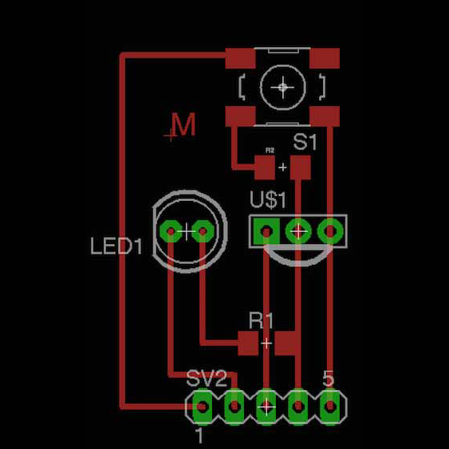
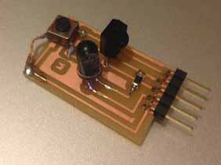
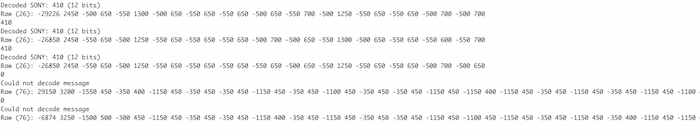

11 - Output devices
Intro
The assignment of this week was to create a board to use an output device. Outputs are importants because they allows to make effect in the physical world and give feedback to the user.
Designing the shield
For this assignment I decided to create a board to be used with the Fabkit (see the previous assignment) .
I've look around to find inspiration (i.e. google and youtube) and I found a lot of projects involving the use of light with leds or motors. They are not so difficult to be used and can create nice user experience. However in this perood I'm also reasoning on some Internet of Things issues, especially on the fact that, even if we use electronics everyday, those objects are dummy and not smart. And it will cost very much to make the "old" objects smarter or making new ones. However we can create a workaround trying to make smart objects that controls "dummy" objects. As many electronic devices are controlled with IR remotes I decided to create a universal IR remote control that can be used to command any object. IRcommands are not so easy as you have to consider the frequency and the specific command. Each vendor has his own commands so there are online libraries with remote control codes. For this reason I decided to make a board that could receive a command, store it and then send it back when asked.
A note about IR communication
I found very useful the documentation of this IR remote library for Arduino:
An IR remote works by turning the LED on and off in a particular pattern. However, to prevent inteference from IR sources such as sunlight or lights, the LED is not turned on steadily, but is turned on and off at a modulation frequency (typically 36, 38, or 40KHz). The time when a modulated signal is being sent will be called a mark, and when the LED is off will be called a space. Each key on the remote has a particular code (typically 12 to 32 bits) associated with it, and broadcasts this code when the key is pressed. If the key is held down, the remote usually repeatedly broadcasts the key code. For an NEC remote, a special repeat code is sent as the key is held down, rather than repeatedly sending the code. For Philips RC5 or RC6 remotes, a bit in the code is toggled each time a key is pressed; the receiver uses this toggle bit to determine when a key is pressed down a second time.
For this reason I has to use a IR receiver decoder and an IR led. The IR receiver was a TSOP32438 IR (see the datasheet).
IR detectors are specially filtered for Infrared light, they are not good at detecting visible light. IR detectors have a demodulator inside that looks for modulated IR at 38 KHz. Just shining an IR LED wont be detected, it has to be PWM blinking at 38KHz. IR detectors are digital out - either they detect 38KHz IR signal and output low (0V) or they do not detect any and output high (5V). Moreover the receiver used can filter disturbances (see a detail here)
The TSOP32438 IR has 3 pins and you can see the pinout below:

To send the command I used an IR led. I used a through hole to have a longer range (it depends on the structure of the led, see the datasheet). Ineed you can have wide angle-short range, narrow angle-longer range. As the led has a forward voltage of 1.4 V I had to put a resistor. As the Fabkit is powered with 5V the voltage droput should be 3,6V. Applying the Ohm's law (R=V/I), as the current is 20 mA, the resistance is 3,6/0,02 = 180 Ohm.
I decided also to add a button so I can press it when I want to send a command. I added also a 10KOhm pull-down resistor. In that way when the button is pressed I will read HIGH, when not pressed I will read LOW.
So, in order to make a board to host the sensor and the led I need three digital pin and the power. On the Fabkit left side we have a VCC, GND and two digital pin close.
I designed the board with Eagle and you can see the board image below.

I exported the monochrome image from Eagle and then I processed it with GIMP to enlarge the holes for the components to be sure that the fabmodules will see them. Then I imported the images in the fabmodules and I generated 3 files. One for the traces (to be milled with the 1/64" tool), one for the holes and one for the outline (both to be cutted with the 1/32" tool). The I milled it using the Roland SRM-20 and a FR-1 plate.
However once it finished I discover I made a mistake placing the button and it didn't fit well, so I used a jumper to solve the problem.

Moreover, as IR light is not visible by humans, to test the led I used the camera of a Nokia C5 mobile phone. The filter of the camera allows the IR light to pass so I can see it in the screen. Amazing!
Programming
As described above the IR receiver sends a digital output each time receive a IR light pulse. The sequence and the time between each signal is the code used to discriminate different commands. However this happens very quickly soalso the program should react really fast. As I'm programming using the Arduino IDE I red an interesting tutorial that explain how to optimize the code. For example the digitalRead() procedure is a tad too slow to reliably read the fast signal as its coming in. Thus we use the hardware pin reading function directly from the register (PORTD, pin 0 to 7 ). You can find a clear explanation here . It was very interesting to understand this "low level" programming. Indeed in the PORTD register you can find a list of 0 and 1 representing the status (HIGH or LOW) red on the pins. Using the bitwise operators you can see if the pin is HIGH. In the code they use (IRpin_PIN & (1 << IRpin)) where IRpin_PIN = PORTD and IRpin = 2. 1 << IRpin is equal to 0000100 (shift 1 to left), so if the PORTD value is 0000100 (pin 2 is high) the AND operator returns true and it means that the pin is high.
Looking for other documentation I found a very useful and interesting library that allows to receive and send IRcommands.Using the IRrecord example of the library I used the circuit to turn off my tv.
I saw that is possible to decode the code with the IRremote library . I did this with the library with the IR Dump example an I obtained the following code (testing with my tv and my air conditioner):

The values represent the intervals of the flashes (the IR "morse code"). When the command is recognized it prints the name of the manufacturer and the id of the code. If not it prints only the raw data. So copying this value is it possible to replicate the commands. Indeed with the IR Record example pressing the button on my board made the sketch send back the command. I noticed that with my tv worked while eith the conditioner doesn't. So I made other researches and I found that Mitsubishi give several issues with this library and I found this useful project with a modified version of the library to work well with Mitsubishi.
Download
- ©
 Attribution, non-commercial, share alike.
Attribution, non-commercial, share alike. - Design: HTML5 UP